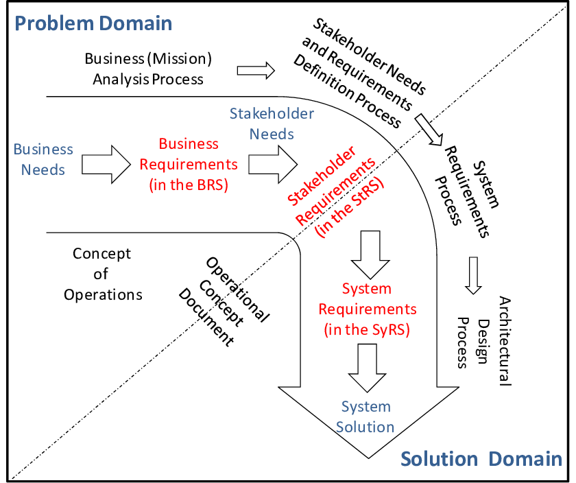

<!DOCTYPE html>
<html lang="en">
  <head>
    <meta charset="utf-8" />
    <meta name="viewport" content="width=device-width, initial-scale=1.0, maximum-scale=1.0, user-scalable=no" />

    <title>reveal-md</title>
    <link rel="shortcut icon" href="./favicon.ico"/>
    <link rel="stylesheet" href="./dist/reveal.css" />
    <link rel="stylesheet" href="./dist/theme/black.css" id="theme" />
    <link rel="stylesheet" href="./css/highlight/zenburn.css" />

  </head>
  <body>
    <div class="reveal">
      <div class="slides"><section  data-markdown><script type="text/template"># Software Design Essentials
</script></section><section  data-markdown><script type="text/template">

## Why
</script></section><section  data-markdown><script type="text/template">
## Plan
- Inspiration
- 7-8 sessions
- do/ not do
</script></section><section  data-markdown><script type="text/template">

</script></section><section  data-markdown><script type="text/template">


</script></section><section  data-markdown><script type="text/template">


</script></section><section  data-markdown><script type="text/template">

</script></section><section  data-markdown><script type="text/template">


</script></section><section  data-markdown><script type="text/template">

</script></section><section  data-markdown><script type="text/template"> 
## The mythical man-month
</script></section><section  data-markdown><script type="text/template">

</script></section><section  data-markdown><script type="text/template">
#### Frederick P. Brooks, the author
- father of IBM-360
- 1956 Ph.D. from Harvard Univ
- 1956-1965 System 360
- 1975  "The mythical man-month"
- 1995 anniversary edition in 1995
</script></section><section  data-markdown><script type="text/template">- 2010 interviewed by Wired magazine
- Q: What do you consider your greatest technological achievement?
- A: The most important single decision I ever made was to change the IBM 360 series from a 6-bit byte to an 8-bit byte, thereby enabling the use of lowercase letters. That change propagated everywhere.
</script></section><section  data-markdown><script type="text/template">

IBM’s very popular 1401

</script></section><section  data-markdown><script type="text/template">
Customer’s choices:
- move to a bigger IBM system, such as an IBM 7000
- install a competitor’s system
- acquire more 1401s. 
</script></section><section  data-markdown><script type="text/template">


- The IBM System/360 (S/360) is a family of mainframe computer systems that was announced by IBM on April 7, 1964, and delivered between 1965 and 1978. 
- The first family of computers designed to cover the complete range of applications, from small to large, both commercial and scientific.
- allowing customers to purchase a smaller system with the knowledge they would always be able to migrate upward if their needs grew, without reprogramming of application software or replacing peripheral devices. 
</script></section><section  data-markdown><script type="text/template">

</script></section><section  data-markdown><script type="text/template">
- Chief architect: Gene Amdahl
- Project manager: Fred Brooks
- Chairman Thomas J. Watson Jr.
- Vice president of manufacturing and development: Learson
</script></section><section  data-markdown><script type="text/template">

</script></section><section  data-markdown><script type="text/template">
- From the beginning we faced two risks, either of which was enough to keep us awake at night. 
- First there was the task of coordinating the hardware and software design work for the new line. We had engineering teams all over America and Europe working simultaneously on six new processors and dozens of new peripherals… but in the end all of this hardware would have to plug together. 
- The software was a bigger hurdle still. In order for System/360 to have a common personality, hundreds of programmers had to write millions of lines of computer code. Nobody had ever tackled that complex programming job, and the engineers were under great pressure to get it done.
</script></section><section  data-markdown><script type="text/template">
- From 7 April to when the company started delivering machines to customers, IBM entered the most dangerous, intense, and challenging era of its history. 
- The company spent USD $5 billion (about $40 billion today) to develop the System/360, which at the time was more than IBM made in a year
- eventually hire more than 70,000 new workers
- Every IBMer believed that failure meant the death of IBM
</script></section><section  data-markdown><script type="text/template">


Finally, big success
- 1966, price 2.5~ 3m, 1k+ monthly
- one of the most successful computers in history, influencing computer design for years to come.
</script></section><section  data-markdown><script type="text/template">
CEO Thomas Watson Jr., asked in Brooks's exit interview
-  why it was so much harder to manage **software** projects than **hardware** projects
</script></section><section  data-markdown><script type="text/template">

#### the mythical man-month

Reasons to miss schedule:
- unvoiced assumption: that all will go well;
- man-month: schedule -- effort; man and month can be interchangable;
- estimation is not continuous;
- no effective monitoring;
**adding more manpower to a late software makes it later**
</script></section><section  data-markdown><script type="text/template">
task types:
- breakable;
- unbreakable;
- breakable and need communication `n*(n-1)/2`;
</script></section><section  data-markdown><script type="text/template">
schedule --- depends --> sequence
manpower --- depends ----> the number of single tasks

experience formula
1/3 planning
1/6 coding
1/4 component testing and early system testing
1/4 system testing
</script></section><section  data-markdown><script type="text/template">
### Team: the surgical team
- separate a large team into multiple small ones;
- each team has the following roles
- scalability

challenges/ issues
- Few key developers understand the problem domain to a sufficient degree, and must rely on domain experts. This is simply a function of specialization--it's tough to find kick-butt programmers who also are lawyers, doctors, accountants, or otherwise are experts in the domain the software is modeling.
- Scalability is limited by the number of "surgeons" you have available.
- There's a lot of down time for the other staff while they wait on instructions, since the highly-focused "doer" is also managing the team. That's ok in the OR, since you're dealing with a "zero-bug" mandate and "live software." But in this economy, a more distributed workload is more efficient, even if it results in the occasional sync problem between team members.
</script></section><section  data-markdown><script type="text/template">
### Aristocracy, Democracy and System Design

- Conceptual integrity means that the system’s **central concepts** work together as a smooth, cohesive whole, and it is a critical factor in creating perceived integrity. 
- Software needs an additional level of integrity—it must maintain its usefulness over time. Software is usually expected to evolve gracefully as it adapts to the future. 
- Software with integrity has a coherent architecture, scores high on usability and fitness for purpose, and is maintainable, adaptable, and extensible. 
</script></section><section  data-markdown><script type="text/template">

Research has shown that integrity comes from 
- wise leadership, 
- relevant expertise, 
- effective communication, 
and healthy discipline; 
processes, procedures, and measurements are not adequate substitutes.
</script></section><section  data-markdown><script type="text/template">
### The second-system effect
over design
</script></section><section  data-markdown><script type="text/template">
### No Silver Bullet 
There is no single development, in either **technology** or **management technique**, which by itself promise even one order-of-magnitude improvement within a decade in productivity, in reliability, in simplicity
</script></section><section  data-markdown><script type="text/template">
### Essense and accident

- Essense: complex concept structure

- Accident: present these abstract entities using a programming language
</script></section><section  data-markdown><script type="text/template">natural attributes of concept structure
- complexity
  - no 2 parts are alike
  - very large number of status
  - nonlinear increase with size
- consistency
  - arbitrary complexity - created by human factors
- changeability
  - function are subject to change
  - can be changed easily
  - built to change
- invisibility
  - software is conceptual
  - no geometric representation of a software architecture  
  - difficulties in communication minds 
</script></section><section  data-markdown><script type="text/template">
progress made to solve accidental difficulties
- high-level languages
- better hardware
- programming environments
- object-oriented programming

develop vs purchase
waterfall vs prototype
people are everything
</script></section><section  data-markdown><script type="text/template">
Some samples of conceptual integrity

- Unix (based on the notion of a "file" (e.g. directories, devices, file systems, named pipes and sockets are all sort-of files)
- Smalltalk ("everything is an object", and the small set of other accompanying principles)
- SQL ("all data is in tables", with keys and constraints)
- Lisp ("everything is a list")
</script></section><section  data-markdown><script type="text/template">
## The design of design
- design
- rational model
- spiral model
- constraints / style 
- design & people
Great design <--- great designer
- case study
  - Beach house
  - system 360
  - OS 360 
</script></section><section  data-markdown><script type="text/template">
For the architecture team, the real System/360 was the Design Concept itself, a Platonic ideal computer.
Those physical and electrical Model 50, Model 60, Model 70, and Model 90 things under construction out on the engineering
floors were but Plato’s shadows of the real System/360. 
The real System/360’s most complete and faithful embodiment was not in silicon, copper, and steel, but in the prose and diagrams of IBM System/360 Principles of Operation, the programmer’s machine language manual
</script></section><section  data-markdown><script type="text/template">
I never felt such a Design Concept entity of the Operating System/360 software family. Perhaps its architects did; perhaps I did not have an intimate enough acquaintance with its conceptual bones. Perhaps the Design Concept didn’t emerge for me because OS/360 was in fact a fusion of four somewhat separate parts: a supervisor, a scheduler, an I/O control system, and a large package of compilers and utilities
</script></section><section  data-markdown><script type="text/template">
## Another look on conceptual integrity
</script></section><section  data-markdown><script type="text/template">```mermaid
graph TD
    A[Object, Sample] -->|generalization, extract similarities| B[Concept]
    B -->|build| C[thought]
    B --->|form| D[ability]
    B --->|present as|E[symbol]
```


</script></section><section  data-markdown><script type="text/template">


</script></section><section  data-markdown><script type="text/template">
<div style="background-color:white">

</div>

</script></section><section  data-markdown><script type="text/template">

</script></section><section  data-markdown><script type="text/template">
- The customers, the world, the business, via the product team are shaping or construing the problem domain 
- good software architects, are responsible for the design of the solution domain, which includes the constructs, concepts and technology by which the solution will be implemented

The problem domain and the solution domain are described using models and concepts. 

The concepts, and especially the model's different elements (entities, relations, behaviors, processes) is what would be materialized as software elements.
</script></section><section  data-markdown><script type="text/template">

- An inconsistency in the concepts definition will lead to either a broken model 
- a logical flaw that will at one time or the other will:
  - Cause a bug (usually a few), such as a little piece of functionality that doesn't work well, or a serious one
  - Cause the solution to be a non-solution – that is, it doesn't match the problem domain 


</script></section><section  data-markdown><script type="text/template">
# Conceptual Integrity

## Propriety
a software system should have just the functions essential to its purpose and no more
- complete
- simple
## Orthogonality
individual functions should be independent of one another
## Generality
a single function should be usable in many ways

 Blaauw and I have elsewhere discussed conceptual integrity at some length, identifying as component principles orthogonality, propriety, and generality. 
 the design of design
</script></section><section  data-markdown><script type="text/template">
# Wrapper up

- Software complexity
- Design concept
- Conceptual integrity
</script></section><section  data-markdown><script type="text/template">
</script></section></div>
    </div>

    <script src="./dist/reveal.js"></script>

    <script src="./plugin/markdown/markdown.js"></script>
    <script src="./plugin/highlight/highlight.js"></script>
    <script src="./plugin/zoom/zoom.js"></script>
    <script src="./plugin/notes/notes.js"></script>
    <script src="./plugin/math/math.js"></script>
    <script>
      function extend() {
        var target = {};
        for (var i = 0; i < arguments.length; i++) {
          var source = arguments[i];
          for (var key in source) {
            if (source.hasOwnProperty(key)) {
              target[key] = source[key];
            }
          }
        }
        return target;
      }

      // default options to init reveal.js
      var defaultOptions = {
        controls: true,
        progress: true,
        history: true,
        center: true,
        transition: 'default', // none/fade/slide/convex/concave/zoom
        plugins: [
          RevealMarkdown,
          RevealHighlight,
          RevealZoom,
          RevealNotes,
          RevealMath
        ]
      };

      // options from URL query string
      var queryOptions = Reveal().getQueryHash() || {};

      var options = extend(defaultOptions, {}, queryOptions);
    </script>

    <script src="./_assets/lib/mermaid.min.js"></script>
    <script src="./_assets/lib/reveal-mermaid.js"></script>

    <script>
      Reveal.initialize(options);
    </script>
  </body>
</html>
